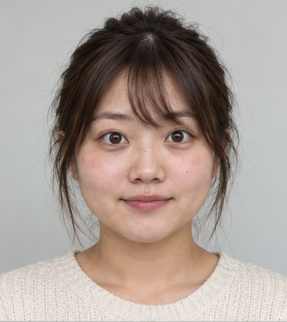

FIORNEA FACE
AI顔診断
質問に答えて、顔イメージと美容プランを確認する簡易シミュレーションです。
当院のAI顔診断では、お顔の写真をアップロードいただくことで、顔のバランスや特徴を分析し、お客様に適した美容医療をご提案します。
また、お顔の写真のアップロードに抵抗がある方や、まずは気軽に診断を体験したい方に向けて、写真を使用しない「シミュレーション診断」もご用意しています。
シミュレーション診断では、いくつかの質問に回答いただくことで、回答内容に基づいた顔のイメージと美容プランをご確認いただけます。
※シミュレーション診断はイメージを用いた簡易診断であり、実際の顔の分析結果とは異なります。
SIMULATION
シミュレーション診断
QUESTION 1 / 4
診断中です
回答データを解析中
0%RESULT
シミュレーション診断結果
回答内容に基づくイメージ結果です。実際のお顔を分析・評価したものではありません。

-
- 診断顔タイプ
- 顔バランス
- 印象評価
- 推奨施術